Kurz prüfen, Türen öffnen und die passende Aufgabe starten.
Akku und WasserAkku ausreichend? Für Nassreinigung genug Frischwasser? Schmutzwassertank nicht voll?
Behälter und DeckelPassender, geleerter Behälter eingesetzt? Schmutzwassertankdeckel richtig geschlossen?
Zubehör und TrockenheitPassendes Zubehör eingesetzt, Filterschwamm trocken? Für Teppich auch Staubbehälter und Saugweg auf Restfeuchte prüfen.
Sauber und freiWalzen, Saugleiste, Saugschlauch und Sensoren sauber? Kabel und lose Gegenstände vom Fahrweg entfernt?
Karte und StationRichtige Etage, Position und Aufgabe gewählt? Arbeitsstation mit Strom versorgt und erreichbar?
Türen während der gesamten Aufgabe offen halten
Benötigte Zwischentüren und Türen zur Arbeitsstation vor dem Start öffnen. Geschlossene Türen versperren den Weg zur Reinigungsfläche oder zur Station.
Auch bei zeitgesteuerten Aufgaben: die Türen rechtzeitig vor dem geplanten Start kontrollieren.
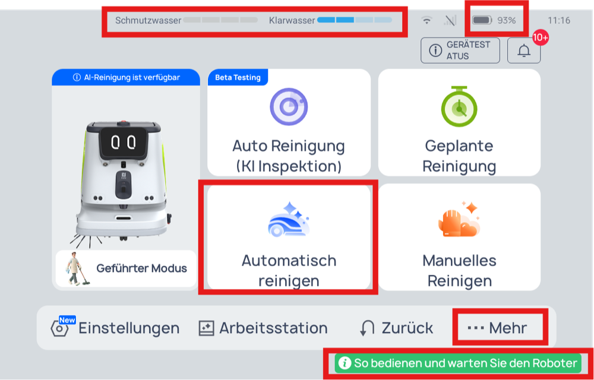
Aufgabe starten
Automatisch reinigen → passende Aufgabe auswählen → Zubehör bestätigen → Griff absenken → Starten. Der Not-Halt darf nicht gedrückt sein. Hinweise auf dem Bildschirm beachten.
Hilfe: Der grüne Button öffnet Bedienungs- und Wartungsvideos. Weitere Pflegehinweise unter Gerätestatus und auf Seite 4.
Etage und Bodenart bestimmen die passende Aufgabe.
Vorderhaus + Hinterhaus
Station: Vorderhaus · EG (0)
Bereich / Etage
Boden
Aufgabe / empfohlener Modus
Vorderhaus 1.OG-6.OG
Teppich
Reines Teppichsaugen bevorzugen; Bürstenwalzen bei Bedarf einschalten.
Hinterhaus 1.OG-4.OG
Teppich
Reines Teppichsaugen bevorzugen; Bürstenwalzen bei Bedarf einschalten.
UG (-1) und EG (0) Teppichbereiche
Teppich
Reines Teppichsaugen bevorzugen; Bürstenwalzen bei Bedarf einschalten.
UG (-1) und EG (0) Ohne Kellerbereiche
Hartboden
Kehren oder Nassreinigung
Keller im UG (-1) Hinter der Tür
Hartboden
Nur Nassreinigung
Keller auf Ebene -2 Hinter der Tür
Hartboden
Nur Nassreinigung
Bei beiden selten genutzten Kellerbereichen: Türen vor jedem Einsatz selbst vollständig öffnen und während der Reinigung offen halten.
Loretto
Station: UG (-1)
Bereich / Etage
Boden
Aufgabe / empfohlener Modus
UG (-1), EG (0), 1.OG und 2.OG
Hartboden
Nur Nassreinigung Auf allen vier Etagen.
Beide Arbeitsstationen: automatischer Wasserwechsel und Reinigungsmittelzugabe. Für die Rückkehr den Roboter auf die Etage seiner Station bringen und die passende Karte wählen.
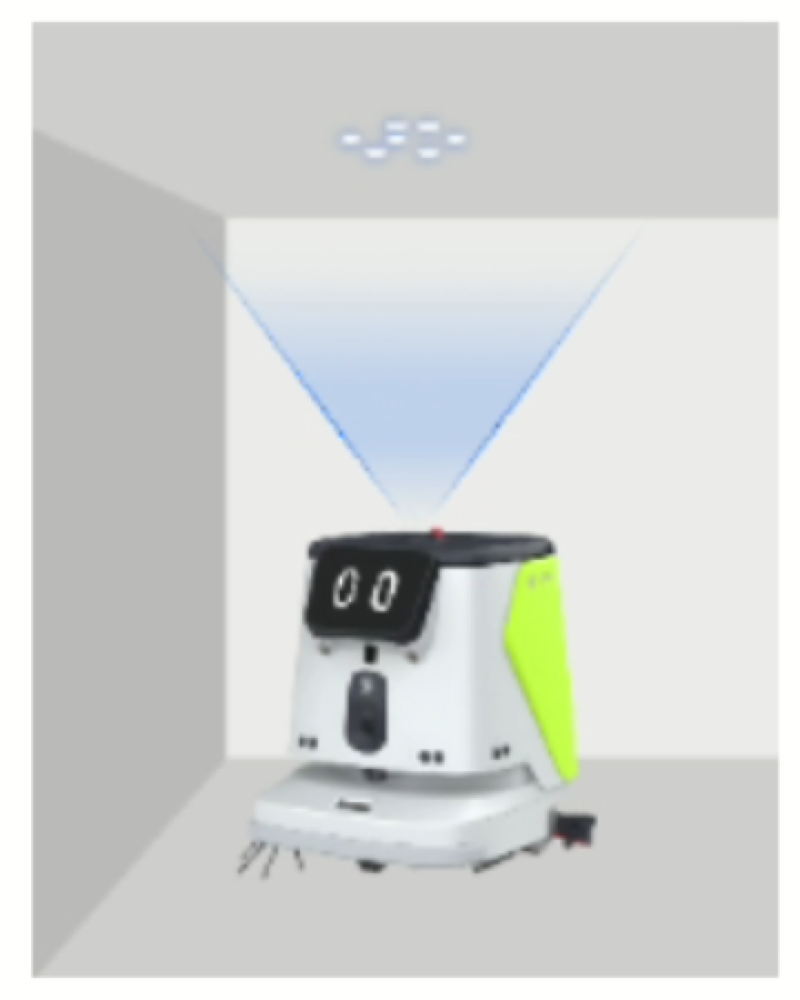
Positionscode an der Decke
Etage wechseln
Mit dem Aufzug in die gewünschte Etage bringen, unter einen Positionscode schieben und die Karte wählen: Einstellungen → Karte → Karteneinstellungen. Position vor dem Start prüfen.
Aufgabe bearbeiten: Automatisch reinigen → Aufgabe wählen → Bearbeiten → Reinigungsparameter. Änderungen speichern und kurz testen.
Die Kellerbereiche über ihre jeweilige Karte / Aufgabe am Roboter auswählen. Menübezeichnungen können je nach Softwarestand abweichen.
KWA PARKSTIFT ROSENAU · KONSTANZ · CC1 PRO
Teppich und Nassreinigung
Passenden Modus wählen und beim Wechsel Feuchtigkeit vermeiden.
Teppich · Alltag
Reines Saugen
Für die tägliche Teppichreinigung bevorzugen: ohne laufende Bürstenwalzen. Die dafür abgestimmte Einstellung verwenden.
Teppich · Bei Bedarf
Mit laufenden Walzen
Für eine intensivere Reinigung die Bürstenwalzen bei Bedarf einschalten. Dünne Schutzteppiche können eingezogen werden, Walzen blockieren und Geräusche oder Verschleiß verursachen.
Bei aufliegenden Schutzteppichen: Verlauf beobachten. Wenn sich der Teppich einzieht oder die Walze blockiert, die Aufgabe stoppen und den Modus prüfen.
Teppich: Zubehör für beide Saugmodi
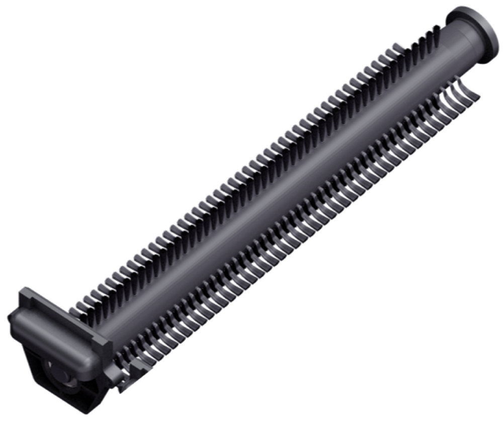
Kehrwalzen
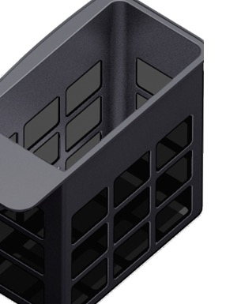
Staubbehälter
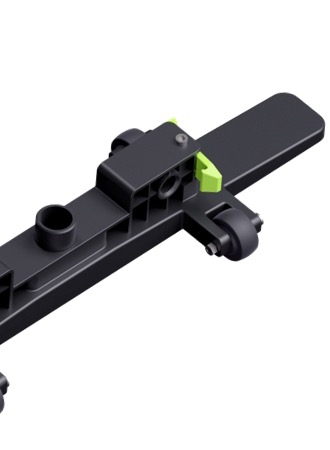
Teppichsaugmodul
Nassreinigung: Zubehör
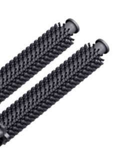
Schrubbwalzen
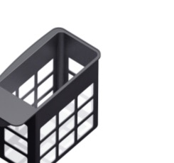
Filterbox
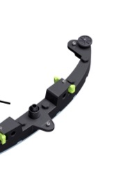
Saugleiste
Beide Teppichmodi verwenden dasselbe Zubehör; beim reinen Saugen drehen sich die Walzen nicht. Zubehörprüfung am Bildschirm beachten. Seitenbürste bei Teppich- und Nassreinigung wie in der Einweisung abnehmen. Staubbehälter: nur entleeren und ausklopfen; nicht mit Wasser spülen.
Von nass zu trocken: erst reinigen und trocknen
1
Reinigung beenden und entleeren Schmutzwasser an der Station ablassen.
2
Wischen und prüfen Tankrand und obere Flächen trockenwischen, Walzenkammer auswischen. Filterschwamm auf Trockenheit prüfen.
3
Saugweg kontrollieren Saugschlauch und Anschluss oberhalb der Saugleiste prüfen und säubern.
4
Zubehör wechseln und starten Filterbox durch den Staubbehälter ersetzen. Passende Walzen und Teppichsaugmodul einsetzen, Zubehör bestätigen und Teppichaufgabe starten.
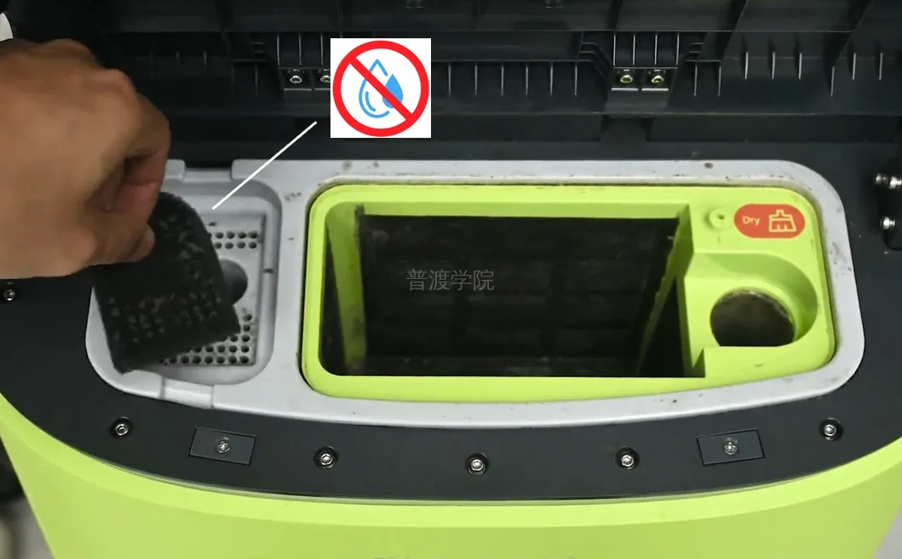
Gebläse-Filterschwamm: trocken halten, leicht ausklopfen; nicht mit Wasser waschen.
Möglichst an unterschiedlichen Tagen planen. Direkt nach der Nassreinigung kann Restfeuchte Staub binden und den Saugweg verstopfen.
KWA PARKSTIFT ROSENAU · KONSTANZ · CC1 PRO
Tägliche Pflege und Selbstreinigung
Nach der Nutzung reinigen; vor dem nächsten Start prüfen.
Vor manueller Reinigung: Aufgabe beenden, Roboter ausschalten und Schlüsselschalter auf AUS stellen.
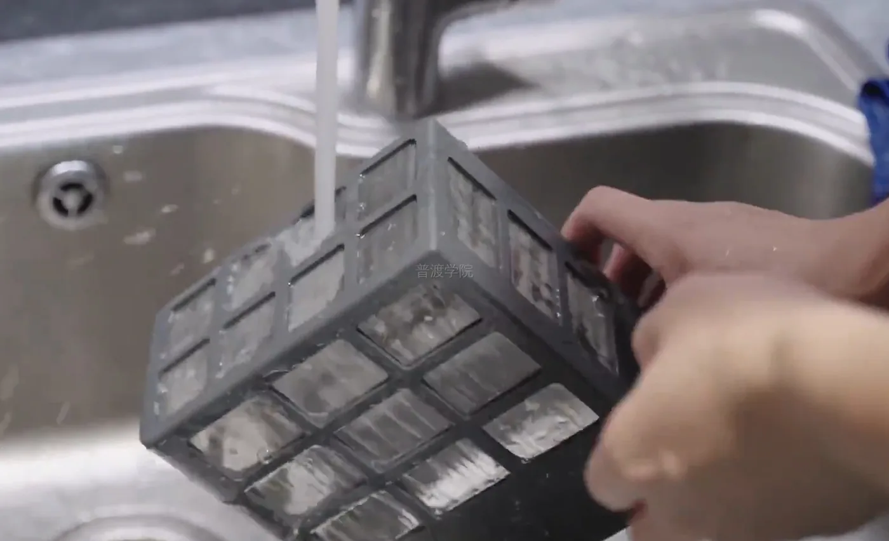
Filterbox · nass Entleeren und mit klarem Wasser ausspülen.Gebläse-Filterschwamm Trocken ausklopfen. Nicht mit Wasser waschen.
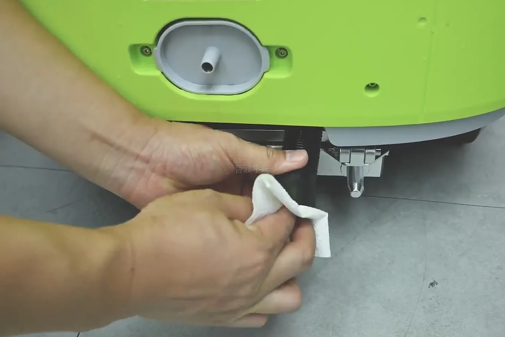
Saugschlauch Verstopfungen und Rückstände entfernen.
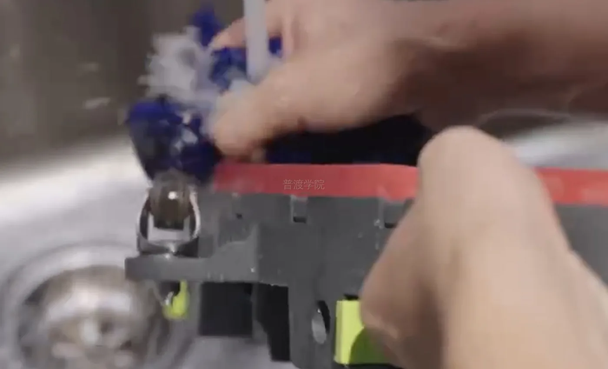
Saugleiste Reinigen und Gummilippen prüfen.
Staubbehälter für Teppich: entleeren und ausklopfen; trocken halten und nicht mit Wasser spülen. Außerdem: Schmutzwassertank entleeren, Tankrand und Walzenkammer säubern; Sensoren mit einem weichen Tuch reinigen.
Selbstreinigung der Walzenkammer
Startseite → Gerätestatus Reinigung der Walzenkammer öffnen und das Anleitungsvideo beachten.
Nur mit Frischwasser im Tank und dem passenden Selbstreinigungsset starten.
Die zwei Spezialwalzen gehören nicht zum Standardzubehör. Das Set kann über Olivia bestellt werden.
Reinigungsmittel
Das abgestimmte Mittel in der vereinbarten Verdünnung verwenden.
Vereinbart: 100-fache Verdünnung; pH der Gebrauchslösung ca. 7,2, Original-pH ca. 9.
Das Mittel muss nicht schäumend sein; PUDU verlangt einen pH-Wert der Gebrauchslösung von 6-8.
Kurze Fehlerprüfung
Wasser bleibt auf dem Boden: Filterbox, Filterschwamm, Saugschlauch und Saugleiste prüfen. Zu wenig Frischwasser: Filter und Wasserverteilerplatte prüfen → Seite 5. Fehler bleibt bestehen: Meldung, Uhrzeit, Etage und Aufgabenname notieren; Foto oder kurzes Video an den technischen Kontakt geben.
Energiereich Consulting GmbH Am Schleifweg 16 · 55128 Mainz
Frischwasserfilter und abnehmbare Wasserverteilerplatte
Bei Verstopfung oder nachlassendem Wasserfluss reinigen. Aufgabe beenden, Roboter ausschalten und Schlüsselschalter auf AUS stellen. Vor dem Neigen beide Tanks entleeren; nur zu zweit auf eine weiche, stabile Unterlage neigen.
1 · Frischwasserfilter
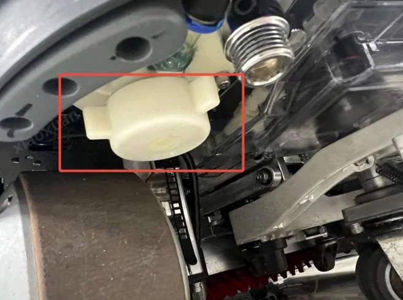
Filtergehäuse an der Unterseite.
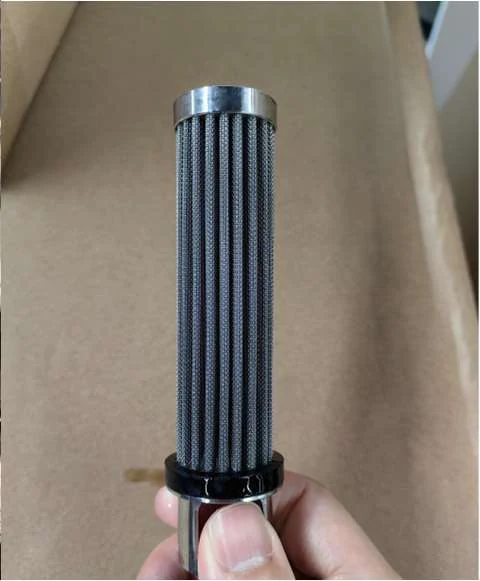
Filtereinsatz mit Metallgewebe.
Wasser auffangen, Abdeckung öffnen und Filter herausnehmen. Mit klarem Wasser spülen; Gehäuse und Dichtung prüfen. Filter vollständig einsetzen und Abdeckung schließen.
2 · Abnehmbare Wasserverteilerplatte
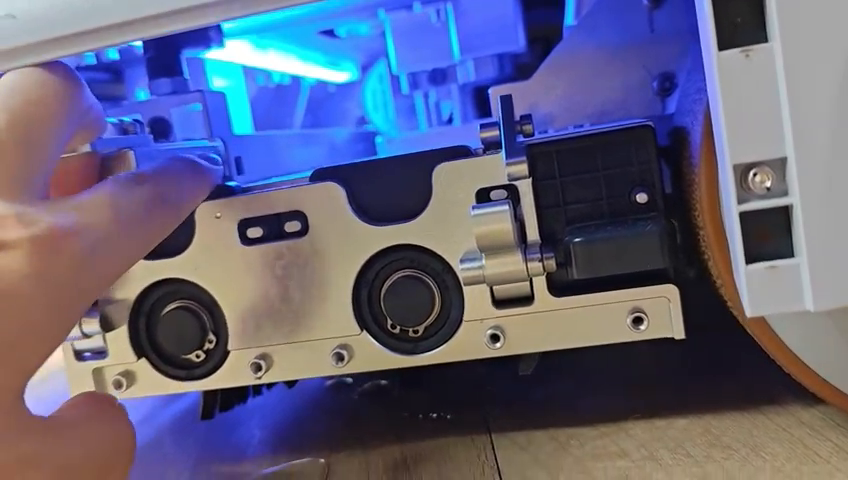
A · Befestigung lösen Wie im Wartungsvideo gezeigt.
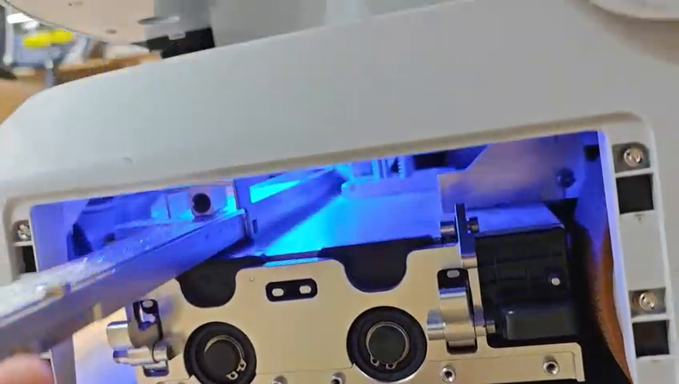
B · Platte entnehmen Die komplette Einheit herausziehen.
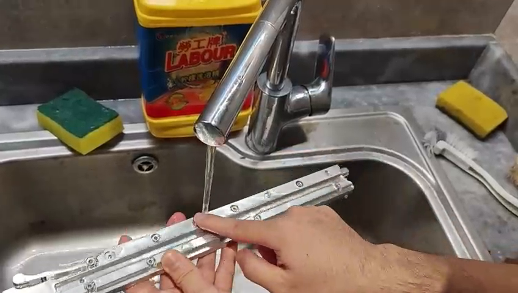
C · Mit Wasser spülen Rückstände aus Kanälen und Öffnungen entfernen.
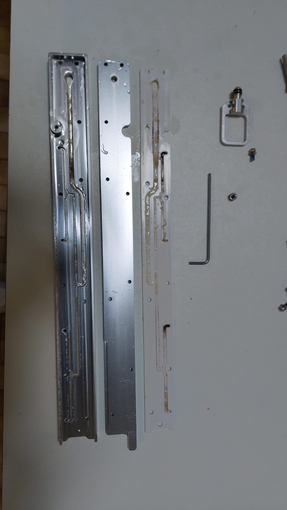
Wasserkanäle und Dichtung
Die Bauteilansicht zeigt die innenliegenden Wasserwege. Für die im Video gezeigte Reinigung wird die Platte als komplette Einheit entnommen und abgespült.
Zum Abschluss: Die gereinigte Platte wie in der Einweisung wieder einsetzen und befestigen. Frischwasser einfüllen und mit einem kurzen Nassreinigungstest den Wasseraustritt prüfen.
Filterfotos: PUDU Academy, Operation Guide V2.0, Kap. 5.1.9. Schritte A-C: Standbilder aus dem bereitgestellten Wartungsvideo; Bauteilansicht: bereitgestelltes Foto. Gilt für die am Standort verwendete abnehmbare Ausführung.